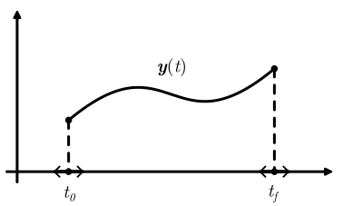

Dynamic Optimization
Phases and Dynamic Variables
Phases represent intervals $t \in [t_0, t_f]$ on which dynamic variables $t \mapsto \boldsymbol y(t)$ are defined.

Problem Formulation
MOI's Function-in-Set form problem is extended as follows. Dynamic Optimization Problems deal with finding variables $x \in \mathbb R^{n_x}$, phase boundaries $t_0^{(i)} \in \mathbb R$, $t_f^{(i)} \in \mathbb R$, and dynamic variables $\boldsymbol y^{(i)} : [t_0^{(i)}, t_f^{(i)}] \rightarrow \mathbb R^{n_y^{(i)}}$ that
\[\begin{align*} \begin{array}{rl} \text{minimize} \quad & m \big( \boldsymbol y(t_0), \boldsymbol y(t_f), t_0, t_f, x \big) + \displaystyle{\sum_{i=1}^{n_p} \bigg[ \int_{t_0^{(i)}}^{t_f^{(i)}} \ell^{(i)} \big( \boldsymbol y^{(i)}(t), t, x \big) \textrm{d}t \bigg],}\\ % \text{subject to} \quad & \begin{aligned} f(x) & \in \mathcal S,\\ % d^{(i)}\big(\dot{\boldsymbol y}^{(i)}(t), \boldsymbol y^{(i)}(t), t, x) & \in \mathcal D^{(i)}, \quad \forall t \in [t_0^{(i)}, t_f^{(i)}], \quad \forall i \in \{1, 2, ..., n_p\},\\ b(\boldsymbol y(t_0), \boldsymbol y(t_f), t_0, t_f, x) &\in \mathcal B, \end{aligned} \end{array} \end{align*}\]
where:
- $f$ are
MOI.AbstractScalarFunctions - $\ell$ and $d$ are
AbstractDynamicFunctions - $m$ and $b$ are
AbstractBoundaryFunctions
Dynamic Functions
PhaseIndexDynamicVariableIndexLinearDynamicFunctionPureQuadraticDynamicFunctionNonlinearDynamicFunctionDerivativeExplicitDifferentialFunction